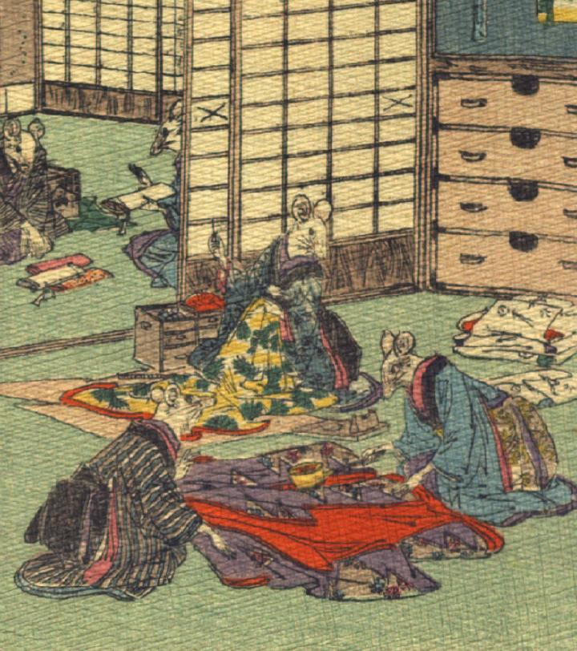

花嫁のために着物を仕立てる鼠たち。奥の部屋では、呉服屋らしい鼠が、反物を持ってきている。手前の部屋3体の鼠たちが着物を縫ったり、火のしをあてたりしている。
著作者：J.Dautremer／出典：親書誌：U426_nichibunken_0111：Le mariage de la souris／日付：2006／資源識別子：U426_nichibunken_0111_0005_0000
Copyright (c)2010- International Research Center for Japanese Studies, Kyoto, Japan. All rights reserved.